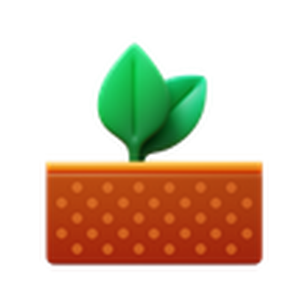

Gestor de l'hort
filter_alt_off
cloud_off
No sincronitzat
remove
add
edit
Editar camins
remove
add
0
unitats plantades
history
Llista
calendar_month
Calendari
expand_more
Visió general
Millors mesos
Cerca una planta
search
close
Plantat des de
Qualsevol
calendar_today
close
Plantat fins a
Qualsevol
calendar_today
close
chevron_left
chevron_right
filter_alt_off
Netejar filtres
Cerca una planta
search
close
Visió general
General
Millors mesos
Top Mes
chevron_left
chevron_right
chevron_left
chevron_right
eco
nutrition
Res
Plantat
Collit
Cerca una planta
search
close
chevron_left
chevron_right
add
download
Exportar
upload
Importar
swap_vert
close
grid_view
Plànol
summarize
Resum
history
Historial
local_florist
Planter
potted_plant
Planter
grain
Llavors
close
Editar secció
Desar
close
add
Afegir una altra planta
Desar
Cancel·lar
close
delete
Desar
delete
Eliminar la planta
Cancel·lar
Desar
cloud_sync
Sincronització